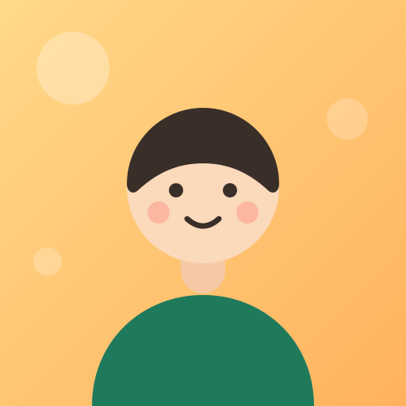

UPDATE
メンバー7名のプロフィールを更新しました。
PEOPLE WHO BUILD THE NEXT STEP
AIを、現場で使える一歩へ。
営業の現場経験とAI活用の両方を知る、株式会社ライトアップのメンバー紹介です。担当者の経験や得意領域、仕事の外にある人柄もご覧いただけます。
🙌 7名を掲載中📣 毎月の特集あり🧩 主要サービス11件
今月の特集
毎月更新
 THIS MONTH ／ 2026.09
THIS MONTH ／ 2026.09
今月の弊社AI事業、
注目ポイントとは。
代表インタビュー
今月の弊社AI事業、注目ポイントとは。
現場で何が動いていて、どこに手を入れているのか。数字の裏にある判断と、来月に向けて仕込んでいることを、代表に聞きました。
記事を読むメンバー
7名／順次追加
01

髪は天然。営業は設計。AIは本気。
土屋 慧介
つっちー
第一営業部AI活用アドバイザー ／ 売上2倍担当
02

1年かけて、御社の売上を2倍に。
榎本 翔太
もっさん
第一営業部AI活用アドバイザー ／ 売上2倍担当
03

「お金がない」を、AI化しない理由にさせない。
佐藤 昴
すばる
経営コンサルティング局Jマッチエンジン ／ OEM提供 担当
04

ご縁を、一度きりで終わらせません。
田村 大輔
たむら だいすけ
経営コンサルティング局Jマッチエンジン ／ OEM提供 担当
05

AIだけでは、温度感までは届きません。
松井 友美
まっちゃん
第2営業部第2営業部 リーダー ／ パートナー様の伴走支援
06

AIに詳しくないところから始める不安は、よく分かります。
江田 梨奈
えだっち
第2営業部パートナー様の募集 ／ AIOマスター OEM
07

営業と、ツールづくりの間。そこをやる人になります。
降旗 一也
ふりはた かずや
第2営業部代理店・パートナー営業
まもなく増えますメンバーを順次追加します。
主要サービス
11件
01AIOマスターAI検索で指名される状態をつくる江田
02LシンクLINEでの一次対応をAIが担う
03ソーシャルマスターSNSの発信を自動で回す
04受電AI電話の取りこぼしを防ぐ
05つばめリード新しい接点を継続して集める
06つばめリファラル紹介の流れを収益につなげる
07名刺LINEエージェント交換した名刺を接点に変える
08Lマッチ問い合わせと担当をつなぐ
09ちりつもAI小さな入口から接点をためる
10AIバード導入から運用まで伴走する
11士業AI実務パック士業の実務をAIで組み立てる
サービスの一覧と新着はこちらWRITEUP / SaaS →